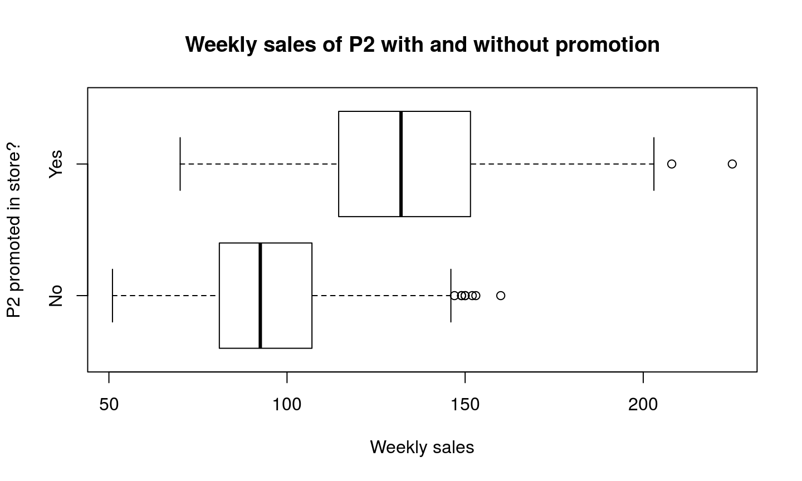

Analísis de datos y el boom de los datos
Analísis de datos y mercadeo
(Algunos) metodos de analísis de datos (para mercadeo)
Recursos y referencias
De que vamos a hablar:
Análisis de datos y el boom de los datos
El boom de los datos

El boom de los datos
Estadística
Análisis de datos
(descriptiva, exploratoria, confirmatoria o inferencial, predictiva)
Decision support systems
Business intelligence
Data mining
Knowledge discovery
Data warehouse
Datamart
OLAP
Datacube
Analytics (predictive, prescriptive)
Machine learning
(Neural networks, Deep learning)
Big data
Data science
Análisis de datos - Metas (i)
De wikipidea (en alguna entrada de alguno de los terminos anteriores):
- "[…] about processes and systems to extract knowledge or insights from data in various forms […]"
- "[…] to extract value from data […]"
- "[…] operate by building a model from example inputs in order to make data-driven predictions or decisions […]"
- "[…] insights from data are used to recommend action or to guide decision making rooted in business context."
- "[…] discovering patterns in large data sets […]"
- "[…] allow for the easy interpretation of [these] large volumes of data […]"
- "[…] help people make decisions about problems that may be rapidly changing and not easily specified in advance […]"
Análisis de datos - Metas (ii)
- "[…] information assets that require new forms of processing to enable enhanced decision making, insight discovery and process optimization."
- "[…] with the goal of discovering useful information, suggesting conclusions, and supporting decision-making."
- "[…] is the discovery and communication of meaningful patterns in data."
- "[…] the study and construction of algorithms that can learn from and make predictions on data […]"
- "[…] to extract information from a data set and transform it into an understandable structure for further use."
- "[…] a set of techniques and tools for the acquisition and transformation of raw data into meaningful and useful information […]"
- "[…] supports business or organizational decision-making activities […]"
Análisis de datos - Metas (iii)
- "[…] apply […] to business data to describe, predict, and improve business performance."
- "[…] to gain valuable knowledge from data […]"
- "[…] analysis of large quantities of data to extract previously unknown, interesting patterns such as groups of data records (cluster analysis), unusual records (anomaly detection), and dependencies (association rule mining) […]"
- "[…] handling large amounts of unstructured data to help identify, develop and otherwise create new strategic
businessopportunities […]" - "[…] to support a wide range of business decisions ranging from operational to strategic […]"
Análisis de datos
En resumen:
Los anteriores terminos hacen referencia a formas de estadística aplicada (o análisis de datos). Los terminos son simplemente cuestión de contexto, diferencias metodológicas y mercadeo pero los objetivos son los mismos:
Información (conocimiento/entendimiento, insight) y
Predicción
Para tomar decisiones de manera inteligente.
Análisis de datos - Proceso

Análisis de datos y mercadeo
Retraso histórico
Estadística +
Biología = Biometría
Economía = Econometría
Psicología = Psicometría
Química = Quimiometría
Ecología (y ciencias ambientales) = Environmetrics
…
¿Y el mercadeo? ¿Por qué no hay "merkometria"?
Análisis de datos y mercadeo
¿Comó puede ayudar el análisis de datos a hacer "mejor" mercadeo?
Mejor: ¿Cuáles problemas de mercadeo surgen comúnmente?
El rapido avance tecnológico (i.e. internet) ha favorecido el rapido desarrollo de aplicaciones basadas en análisis de datos para el mercadeo, compensando rapidamente esa deuda historica.
Metodos de análisis de datos para mercadeo
Análisis básico
- Descripción de distribuciones de variables: marginal, conjunta y condicionalmente.
- Comparación de grupos (sub-poblaciones): visual y formalmente.
- E.g. entender diferencias en el mercado para dirgirse a grupos de clientes más efeicientemente.
- E.g evaluar el impacto de campañas de mercadeo o evaluar la efectividad de los canales de adquisición de clientes.
Análisis básico - distribuciones
Análisis básico - comparación de grupos

Análisis básico - comparación de grupos
- Comparación de grupos - descripción de variables condicionalmente
Análisis básico - comparación de grupos
- Diagramas de embudo (tasas de conversión) efectividad de canales (!)
{kind=link}

Análisis básico
"the most important insights in marketing analysis often come from understanding relationships between variables" [1]
- Relación entre varibles de interés
- Análisis de correlación y asociación
- Determinantes de variables (factores de interés)
Análisis básico - correlacíon
Análisis avanzado - modelamiento
- ¿Qué hace que mis clientes esten satisfechos? ("Satisfaction drivers analysis")
- ¿Comó se relacionan precios, campañas de publicidad, etc, con las ventas? ("Marketing Mix Modeling")
- ¿Cuál es la probabilidad de recompra de mis clientes?
- ¿Cuanto valor aportan los clientes a la empresa? ("Customer lifetime value")
- ¿Cuál es la probabilidad de perder un cliente? ¿Qué factores afectan la tasa de retención de los clientes? ("Churn rate")
Análisis avanzado - modelamiento
- Modelos lineales (regresión lineal)
Análisis avanzado - modelamiento
- E.g atribución de pesos (importancia) de variables
Análisis avanzado - variables latentes
- ¿Comó medir o evaluar conceptos subyacentes al comportamiento del consumidor?
- E.g. satisfacción, percepción de marca, liderazgo de marca, intención de compra, o lujo (de un producto).
- ¿Comó se relaciónan estos componentes entre si?
Análisis avanzado - variables latentes
Análisis avanzado - variables latentes
- Mapas perceptuales

Análisis avanzado - segmentación
- Problema clásico: encontrar (agrupar), evaluar y/o predecir (clasifcar) grupos de clientes.
Recursos y referencias
Recursos y referencias
[1] "R for marketing reasearch and analytics" por Chris Chapman (Google y AMA Insights Council) y Elea McDonnell Feit (Drexel University, antes con The Wharton School, University of Pennsylvania y la Customer Analytics Initiative)
[2] El sitio de la AMA: https://www.ama.org
[3] El sitio de Bruce G.S. Hardie: http://www.brucehardie.com/ (London Business School)
[4] El sitio de Eric Bradlow: https://marketing.wharton.upenn.edu/profile/185/research (The Wharton School, University of Pennsylvania)
Colofón
demorenoc.github.io/slides/marketing-analytics
Esta presentación fue escrita en RMarkdown desde RStudio y compilada por rmarkdown en la plantilla ioslides de Google gracias a knitr y pandoc. Publicada en la web en GitHub gracias a GitHub Pages.
La presentación fue preparada por Daniel Moreno y el contenido original esta bajo la licensia CC-BY 4.0.